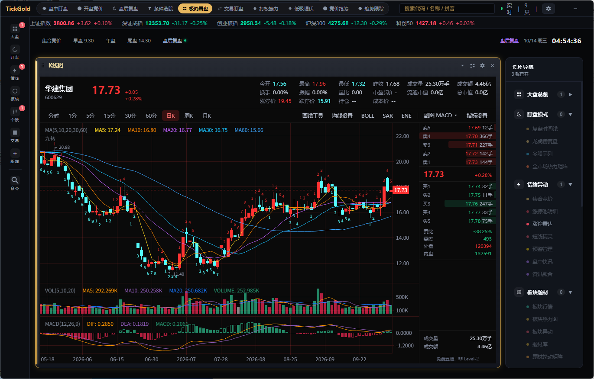
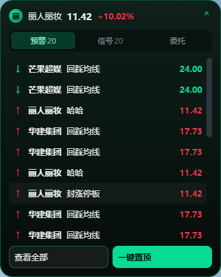
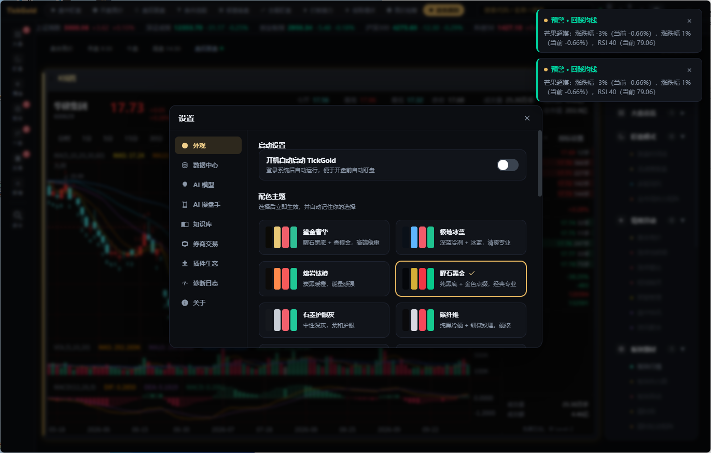
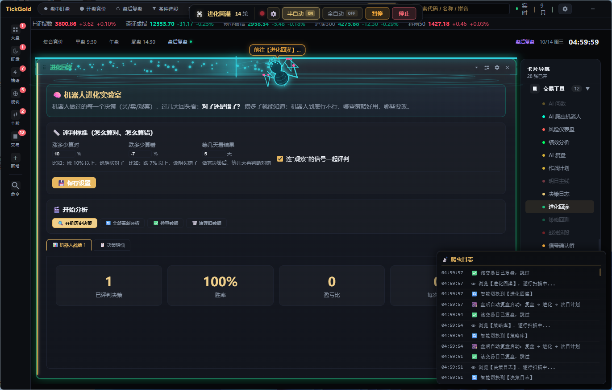

从灵动岛悬浮条到卡片化工作台，从实时行情到 AI 问数，每一个细节都围绕「快速感知、快速决策」设计。
常驻顶部悬浮条显示当前标的价格涨跌幅，点击展开主窗口。全局老板键一键隐藏，画中岛可把分时图/盘口外摆到屏幕一角。
所有功能都是可自由开关的卡片，Mega 菜单或命令面板一键唤起。通用装箱布局自动铺满，支持自由拖拽、磁吸 resize、5 套场景模板。
腾讯行情主源 + 新浪/东方财富备份，单源超时自动切换。Rust 全局 HTTP 并发闸门，断网自动续传，卡片智能轮询节省资源。
双击 K 线蜡烛进入复盘，逐分钟回放（1/2/4/8 倍速）、多日分时叠加（2/3/5 日精确对齐）、分时量比副图、交易时段分段着色。
价格边沿触发、跳水、涨停/跌停封板、炸板、换手率、成交额等多类条件。触发即系统通知 + WebAudio 提示音，触发历史持久化可回看。
自然语言提问盘面/题材/资金，自动调用只读工具并附引用。快脑规则引擎盘中实时输出信号，模拟盘全自动撮合，决策日志可回放。
模拟交易、投资计算器（盈亏/仓位/风报比/补仓/复利）、数据导出（CSV/JSON）、盯盘日记、条件选股、F10 个股资料、经济/新股日历。
内置多镜像容灾更新（ghproxy / gh-proxy / 官方直连），minisign 签名校验，安装前自动备份数据库。本地优先，所有数据保存在本机不上传。
深色鎏金主题，卡片化工作台，一屏看全盘面。点击下方缩略图切换查看。




截图拍摄于 v2.27.0 盘后复盘环境。
免费使用，安装包经 minisign 签名校验。支持 Windows 与 macOS（Apple Silicon / Intel）。
安装提示：Windows 首次运行若 SmartScreen 提示，点击「更多信息 → 仍要运行」；macOS 首次运行若提示无法验证开发者，到「系统设置 → 隐私与安全性」中点击「仍要打开」。应用内支持 Ctrl/⌘+U 检查更新，自动下载签名安装包。
完整的用户手册、快捷键、数据源说明与常见问题，帮助你快速上手 TickGold。